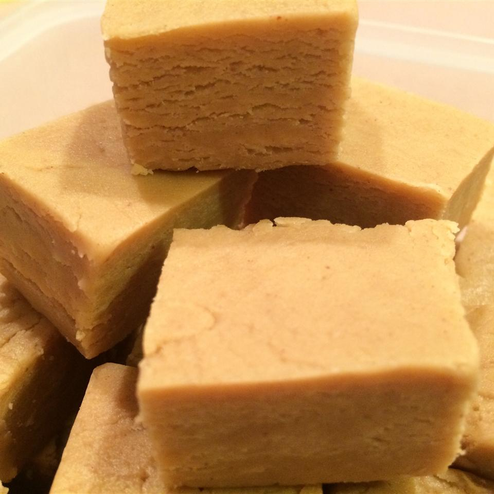

Back
PEANUT BUTTER

Melt butter in a medium saucepan over medium heat. Stir in brown sugar and milk. Bring to a boil and boil for 2 minutes, stirring frequently. Remove from heat. Stir in peanut butter and vanilla. Pour over confectioners' sugar in a large mixing bowl. Beat until smooth; pour into an 8x8 inch dish. Chill until firm and cut into squares.
Ingredients
- Half Cup Butter
- 1 Package Brown Sugar
- Half Cup Milk
- 3/4 Cup Peanut Butter
- 1 teaspoon vanilla extract
- 3.5 Cups Confectioners' sugar
Steps
- Melt Butter in a medium saucepan over medium heat.
- Stir in brown sugar and milk
- Bring to a boiol and boil for w minutes,
- stirring frequently.
- Remove from heat and stir in peanut butter and vanilla
- Pour over confectioners' sugar in a large mixing bowl.
- Beat until smooth
- pour into an 8x8 inch dish
- Chill until firm and cut into squares.